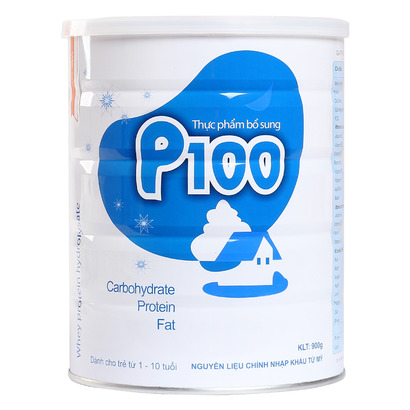

Đánh giá hiệu quả can thiệp thừa cân-béo phì ở trẻ em trước tuổi đến trường tại nội thành Hà
Nội
Nghiên cứu can thiệp có đối chứng trên cộng đồng bằng giáo dục dinh dưỡng, hướng dẫn thực hành cho bà
mẹ, cô giáo và tập luyện thể lực cho 90 trẻ thừa cân - béo phì 4 - 5 tuổi tại 2 trường Mầm non Thực hành
Hoa Sen (trường can thiệp) và Mầm non Thành Công A
Mức tiêu thụ lương thực, thực phẩm của nhân dân 3 xã, phường giám sát dinh dưỡng trọng điểm tỉnh
Đồng Nai-năm 200
rong khuôn khổ của hoạt động giám sát dinh dưỡng hàng năm, Trung tâm y tế dự phòng tỉnh Đồng Nai tiến
hành điều tra khẩu phần thực tế của 150 hộ gia đình tại 3 xã/ phường.

>Research History at National Institute of Nutrition
State level research project on "Study on high risk factors of nutrition and food safety status in the
new condition and relevant solution".
SỐ LIỆU THỐNG KÊ
Năm
Nhẹ cân (W/A)
Thấp còi (H/A)
2010
19,9
32,6
2011
18.9
31,9
2012
16,2
26,7
2013
15,4
24,9
2014
13,4
21,9
2015
12,8
20,9
Xu hướng giảm suy dinh dưỡng trẻ em dưới 5 tuổi năm 2010 – 2015
(Nguồn: Hệ thống giám sát dinh dưỡng toàn quốc. Tổng cục Thống kê và Viện Dinh dưỡng)